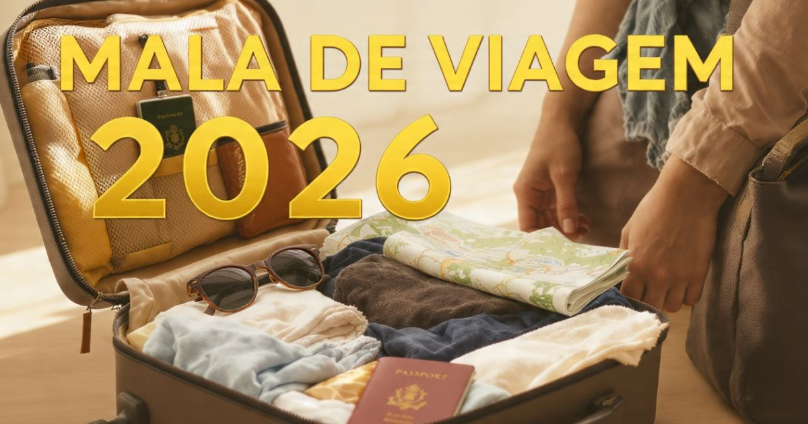

Como fazer mala de viagem 2026: guia completo para viajar leve e organizado
Introdução: a arte de fazer a mala perfeita
Fazer a mala de viagem é uma das etapas mais emocionantes e, ao mesmo tempo, desafiadoras do planejamento de uma viagem. A ansiedade de esquecer algo importante, o medo de levar coisas desnecessárias e a dificuldade de fechar a mala com tudo dentro são sentimentos comuns a todos os viajantes.
Em 2026, com as restrições de bagagem das companhias aéreas e a tendência de viajar mais leve, saber fazer a mala certa se tornou uma habilidade essencial para qualquer viajante. Uma mala bem organizada não só economiza espaço, mas também facilita a localização dos itens, evita estresse e permite que você aproveite melhor a viagem.
Neste guia completo sobre como fazer mala de viagem, você vai encontrar tudo o que precisa saber: como escolher a mala ideal, o que levar, como organizar os itens, dicas para economizar espaço, sugestões para diferentes tipos de viagem, itens proibidos na bagagem e respostas para as principais dúvidas dos viajantes.
Nosso objetivo é que você viaje leve, organizado e preparado para qualquer situação, aproveitando ao máximo cada momento da sua viagem.

Uma mala bem organizada é o primeiro passo para uma viagem tranquila
Como escolher a mala ideal
A escolha da mala é o primeiro passo para uma viagem bem-sucedida. Confira os principais tipos e como escolher o melhor para sua viagem:
Tipos de mala:
- Mala de mão (mochila ou bolsa): Ideal para viagens curtas (1-3 dias). Leve, prática e pode ser levada na cabine do avião.
- Mala de bordo (55x35x25 cm): A mala padrão para bagagem de mão. Cabe no bagageiro do avião e é ideal para viagens de 3-5 dias.
- Mala média (65-70 cm): Ideal para viagens de 5-10 dias. Cabe no porão do avião e tem capacidade para roupas e acessórios.
- Mala grande (75-80 cm): Ideal para viagens de 10-15 dias ou para quem viaja com muitas roupas. Cabe no porão do avião.
- Mala extragrande (acima de 80 cm): Para viagens muito longas (mais de 15 dias) ou para quem viaja com equipamentos especiais.
Material da mala:
- Poliéster/nylon: Leve, flexível e resistente. Ideal para mochilas e malas de mão.
- Policarbonato: Rígido, resistente a impactos e com boa proteção. Ideal para malas de bordo e médias.
- Alumínio: Muito resistente e durável, mas pesado. Ideal para quem viaja com objetos de valor.
O que levar na mala
A lista de itens essenciais para viagem pode variar conforme o destino, a duração e o tipo de viagem. Confira uma lista básica:
Roupas:
- Camisetas (3-5 unidades, dependendo da duração).
- Camisas ou blusas (2-3 unidades).
- Calças/bermudas (2-3 unidades).
- Vestido ou saia (opcional, para mulheres).
- Casaco ou jaqueta (para clima mais frio).
- Roupa íntima (7-10 peças).
- Meias (7-10 pares).
- Pijama.
- Calçados (tênis confortável, sandália ou chinelo).
Acessórios:
- Carteira e documentos (passaporte, identidade, etc.).
- Cartões de crédito/débito e dinheiro local.
- Carregador de celular e adaptador de tomada.
- Fones de ouvido.
- Óculos de sol e estojo.
- Produtos de higiene pessoal (escova de dentes, creme, etc.).
- Kit de primeiros socorros (analgésico, band-aid, etc.).
Itens específicos para cada destino:
- Praia: Protetor solar, biquíni/maiô, chinelos, toalha.
- Frio: Casaco pesado, luvas, gorro, cachecol.
- Aventura: Calçados adequados, mochila, garrafa de água.
Como organizar a mala
Uma mala organizada facilita a localização dos itens e otimiza o espaço. Confira as melhores técnicas:
Técnicas de dobra:
- Dobra tradicional: Dobrar as roupas de forma tradicional, empilhando uma sobre a outra.
- Técnica do rolinho (ranger roll): Enrolar as roupas em forma de rolinho para economizar espaço e evitar amassados.
- Método de empacotamento a vácuo: Usar sacos a vácuo para compactar roupas volumosas.
Organização por categorias:
- Separe as roupas por categoria (camisetas, calças, roupas íntimas).
- Use sacos organizadores (packing cubes) para separar os itens.
- Coloque itens pesados (calçados, livros) na parte inferior da mala.
- Coloque itens frágeis (perfumes, eletrônicos) no centro da mala.
Dicas para economizar espaço
- Enrole as roupas: A técnica de enrolar as roupas (rolinhos) economiza espaço e evita amassados.
- Use sacos a vácuo: Os sacos a vácuo são ótimos para roupas volumosas (casacos, cobertores).
- Leve roupas versáteis: Escolha roupas que combinem entre si (capsule wardrobe).
- Minimalismo: Leve apenas o essencial. Você sempre pode lavar roupas durante a viagem.
- Use os espaços vazios: Coloque itens dentro de sapatos e bolsos para aproveitar espaços vazios.
Mala para viagem de negócios
Viajar a trabalho exige uma mala mais formal e prática. Confira dicas específicas:
- Roupas formais: Leve terno, camisas sociais, calças de tecido e sapatos sociais.
- Acessórios: Laptop, carregador, adaptador de tomada, documentos de trabalho.
- Organização: Use um organizador de cabos e um porta-documentos.
- Dica: Leve um terno a mais para imprevistos.
Mala para viagem com crianças
Viajar com crianças exige planejamento extra. Confira dicas:
- Roupas: Leve mais roupas (crianças sujam mais facilmente).
- Brinquedos: Leve brinquedos para entreter as crianças durante a viagem.
- Alimentação: Leve lanches e água para a viagem.
- Documentos: Leve documentos de identificação e autorização para viagem.
Mala para viagem de aventura
Viajar para destinos de aventura (trilhas, safaris, esportes radicais) exige equipamento específico. Confira dicas:
- Equipamento: Mochila adequada, calçados resistentes, roupas de trekking.
- Proteção: Protetor solar, repelente, chapéu, óculos de sol.
- Saúde: Kit de primeiros socorros, medicamentos específicos.
Itens proibidos na bagagem
Conheça os itens proibidos na bagagem de mão e na bagagem despachada:
Bagagem de mão (proibido):
- Líquidos acima de 100ml (em recipientes individuais).
- Objetos cortantes (canivetes, tesouras).
- Armas de fogo e munição.
- Explosivos e materiais inflamáveis.
Bagagem despachada (proibido):
- Baterias de lítio (power banks, etc.).
- Explosivos e materiais inflamáveis.
Dicas importantes para fazer a mala
- Comece a fazer a mala com antecedência: Não deixe para a última hora. Comece a organizar a mala 2-3 dias antes da viagem.
- Verifique o clima: Pesquise o clima do destino para levar roupas adequadas.
- Faça uma lista: Faça uma lista de itens essenciais para não esquecer nada.
- Não sobrecarregue a mala: Lembre-se dos limites de peso das companhias aéreas.
- Leve documentos importantes: Não esqueça passaporte, visto, cartões, etc.
- Deixe espaço para compras: Deixe um espaço vazio para trazer souvenirs.
Fazer a mala certa é uma arte que se aprende com a prática! Comece com uma lista, escolha roupas versáteis, use a técnica de enrolar para economizar espaço e não se esqueça dos documentos importantes. E lembre-se: menos é mais — você sempre pode lavar roupas durante a viagem e deixar espaço na mala para imprevistos e souvenirs!
❓ Perguntas Frequentes sobre mala de viagem
Para uma viagem de 7 dias, uma mala média (65-70 cm) é ideal. Ela tem capacidade para roupas, calçados e acessórios suficientes para a semana.
A técnica do rolinho (ranger roll) é a mais eficiente para economizar espaço e evitar amassados. Enrole as roupas em forma de rolinho e organize-as verticalmente na mala.
Os itens essenciais são: documentos (passaporte, visto), cartões de crédito, dinheiro, carregador de celular, adaptador de tomada, roupa íntima, calçado confortável, e kit de primeiros socorros.
Para viagens internacionais, verifique as restrições de bagagem da companhia aérea, leve documentos importantes, adaptador de tomada, e roupas adequadas para o clima. Lembre-se dos limites de peso.
Sim, em recipientes de até 100ml, acondicionados em uma sacola plástica transparente com capacidade máxima de 1 litro. Os líquidos devem estar dentro do limite de peso da bagagem de mão.
A melhor opção depende do tipo de viagem. Para viagens curtas, uma mala de mão (55x35x25 cm) é ideal. Para viagens mais longas, uma mala média ou grande é recomendada.
Use a técnica do rolinho (enrolar as roupas) ou coloque papel entre as dobras. Leve um spray anti-amassados ou use o ferro do hotel.
Na mala de mão, leve documentos importantes, itens de valor (eletrônicos, joias), medicamentos, roupas íntimas extras, e um kit de higiene (líquidos até 100ml).